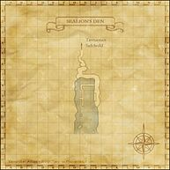

Description
Sealion's Den is a city and battlefield in Tavnazian Archipelago.
Map

Involved in Quests / Missions
| Quest / Mission | Type | Starter | Location |
|---|---|---|---|
| Apocalypse Nigh | General | Esha'ntarl | Ru'Lude Gardens |
NPCs
| Name | Location | Type |
|---|---|---|
| Jovial Rat | pos=H-6 | Event Scene Replayer |
| Sueleen | pos=H-6 | — |
Story walkthroughs in this area
| Story | Mission / quest |
|---|---|
| RoZ Q3 | Apocalypse Nigh |
| CoP 4-4 | Slanderous Utterings |
| CoP 6-3 | More Questions Than Answers |
| CoP 6-4 | One to be Feared |
| CoP 7-1 | Chains and Bonds |
| CoP 7-2 | Flames in the Darkness |
| CoP 7-4 | Calm Before the Storm |
| CoP 7-5 | The Warrior's Path |
References
External references describe their own server or retail rules. Documented Zenith changes take precedence.
Map credits: Map 1 — HorizonXI Wiki. Original game maps © SQUARE ENIX; redrawn maps retain the credited authorship and license.

Additional level-75 reference


|
This port, connected to Tavnazian Safehold, is accessed for a number of missions, and provides access to Al'Taieu as well. |
Connecting Areas
- Tavnazian Safehold at (H-5)
- Al'Taieu
Involved in Quests/Missions
| Quest | Type | Starter | Location |
| Apocalypse Nigh | General | Esha'ntarl | Ru'Lude Gardens |
| Mission | Country | Starter | Location |
| Promathia Mission 6-4:One to be Feared | Promathia | --- | --- |
| Promathia Mission 7-1:Chains and Bonds | Promathia | --- | --- |
| Promathia Mission 7-2:Flames in the Darkness | Promathia | --- | --- |
| Promathia Mission 7-4:Calm Before the Storm | Promathia | --- | --- |
| Promathia Mission 7-5:The Warrior's Path | Promathia | --- | --- |
Weather
|
NPCs Found Here
| |||||||||||||||||
Adapted from Eden Wiki: Sealion's Den · Contributors and history · CC BY-SA 4.0. Revision 45722. Layout, links and optional background text adapted for Zenith.